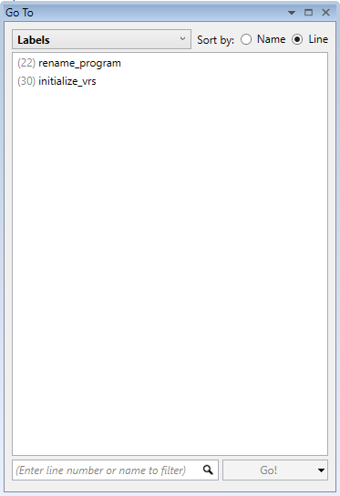
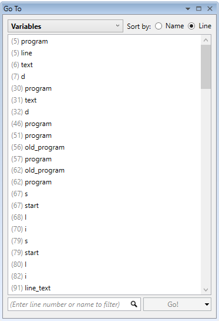
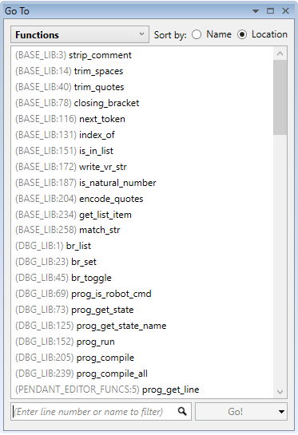
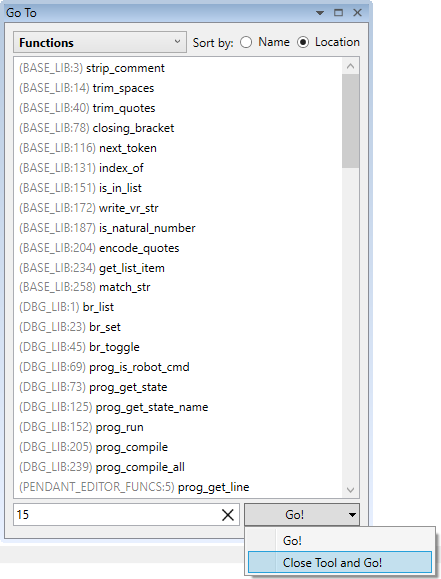
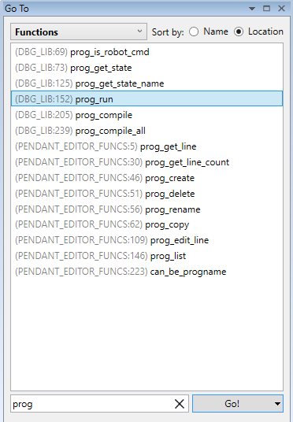

This tool can be used to easily navigate to a specified line number in current Trio BASIC editor, a label definition, a variable defined with a DIM statement or a function definition.
The window operates in three modes : Labels, Variables and Functions.

In this mode, the window acts on the active Trio BASIC editor and lists all labels defined in the editor. To navigate to a label simply double-click on it in the list box or select it and click on the “Go!” button.

In this mode, the window acts on the active Trio BASIC editor and lists all variables defined in the editor with a “DIM” statement. It also lists all function arguments, in case the edited Trio BASIC program is a Trio BASIC library.
To navigate to a variable definition simply double-click on it in the list box or select it and click on the “Go!” button.

In this mode, the window displays a list of all functions in all Trio BASIC libraries from Motion Perfect’s project.
To navigate to a function definition simply double-click on it in the list box or select it and click on the “Go!” button.
In all modes the text box at the bottom can be used to type in a desired line number. Pressing the “Enter” key on the keyboard or clicking on the “Go!” button will navigate to the specified line number in the active Trio BASIC editor.
Sometimes the tool might be needed just to quickly navigate to a line number, label, variable or function. It allows to be automatically closed when navigating to the specified target by selecting “Close Tool and Go!” option on „ Go!” button.

This option can be selected by clicking on the small arrow on the right of the button. The option is remembered the next time the tool is open. The original mode can be restored again by clicking on the arrow and selecting the default “Go!” mode.
When in “Close Tool and Go!” mode, double-clicking on an item in the list box also closes automatically the tool.
Please note that this option is available if the tool is floating. When the tool is docked, only the “Go!” mode is available.
In some situations there might be too many labels, variables or functions and searching manually for a particular one can be slow. The tool provides a quick filtering box where instead of a line number, a filter text can be typed in. The tool then filters the contents of the list box by matching the filter text and displays only items that contain the typed in text.
